2026-10-17 · 状态：已批准；第一期已实现（2026-10-17） · 相关文档：现有架构、开发者工作流、机制讲解（HTML）
版本记录
- v1：EC2 用一把管理员 API 密钥，由管理员统一注册 Agent。
- v2：按你定的交互方式，改成每个用户用自己的 API 密钥连接 Nexus，自己激活 Agent。
- v3（本版）：「激活」改叫「启用」；连接只用复制粘贴；分成第一期（先跑通）和之后优化两部分。 以后创建、更新、启用 Agent 的主入口是编码工具（Claude Code、Codex、Kiro CLI），页面只做查看和兜底。所以这一期把应用接口定成稳定的约定（第 12 节），页面、命令行和以后的编码工具共用这一套；编码工具怎么接入，见第 13 节和 Skills 设计。 Nexus 侧的改进方向也定了：生成 API 密钥时勾选「允许为我的发布签发调用密钥」，之后应用里一点就能启用（见第 11 节）。
1. 交互方式
- 连接（只做一次）：用户在 Nexus「个人设置 › API
密钥」新建一把 API 密钥（
nxc_），复制，粘贴到应用的「Nexus Agent」页。应用以这个用户的 Nexus 身份读出两份列表：- 他的发布：本人的，加上别人分享给他的；
- 他还没发布的 Agent。
- 启用：用户在列表里挑一个
Agent，点「启用」，粘贴这个发布的调用密钥（
nxa_）。调用密钥在 Nexus「互联中心 › 对外发布」签发。应用当场验证，通过后加密保存。 - 使用与迭代：启用后，调用测试里立即可以用这个
Agent。
- 在 Nexus 上新发布的 Agent，刷新后出现在「待启用」里；
- 改了的 Agent，如果发布开着「跟随最新版本」，会立即生效。
┌ 我的 Nexus 连接 ───────────────────────────────────────────────
│ 未连接：[ API 密钥 ●●●●●●●● ] [连接]
│ 在 Nexus「个人设置 › API 密钥」新建一把，给本应用单独用，只读档位就够了。
│ 连接后平台会把这串换新，原来那串作废；随时可以在 Nexus 停用。
│ 已连接：admin（editor）· 只读 · 2 分钟前刷新 [刷新] [断开]
└───────────────────────────────────────────────────────────────
┌ 我的 Agent ───────────────────────────────────────────────────
│ 待启用 九安知识Agent（PoC） A2A 0.3 · 接受 图片、PDF… · v1 [启用]
│ 已启用 九安审核AI（PoC） 指纹 3f9c1a2b · 刚验证 · 能力清单 v2
│ [换密钥] [停用]
│ 有问题 密钥失效、发布已暂停、A2A 关了，都写明怎么修
│ ▸ 我还没发布的 Agent：发布并打开 A2A 之后，会出现在上面
└───────────────────────────────────────────────────────────────
调用测试：我已启用的 Agent，加上系统提供的（审批流在用的那个）
2. 第一期范围：先跑通
| 做 | 不做（之后优化） |
|---|---|
连接：粘贴 API 密钥，whoami；断开 |
拖入接入包 |
| 列表：我的发布（本人的加分享给我的），以及我还没发布的 Agent；打开页面时，列表超过 60 秒就先刷新；手动刷新 | 后台定时刷新；「新发布」标记 |
| 名片：每个发布都读 A2A 名片（公开、免费） | — |
启用一个：粘贴调用密钥，当场验证（名片 +
tasks/），加密保存，默认读一次能力清单 |
一次粘贴多把、自动配对 |
| 换密钥：在已启用的卡片上重新粘贴，验证通过才替换；停用 | 每小时定时复核 |
| 调用测试：只列「我已启用的」和「系统提供的」；按任务的表单直接用已缓存的能力清单 | 深链直达卡片 |
| 调用失败时更新状态：调用时遇到 401，就把这个 Agent 标成「密钥失效」 | — |
| 审批流不变，仍由系统配置 | 由管理员从自己启用的 Agent 里指定 |
接口约定 v1（第 12 节），以及 Skill 的脚本
skills/：它是这套接口的参考调用方，Claude
Code、Codex、Kiro CLI 现在就能直接运行 |
把它打包成可以安装的 Skill；应用个人令牌（先预留） |
3. 身份怎么对应
| 凭证 | 谁提供 | 存在哪 | 用来做什么 | |
|---|---|---|---|---|
| 应用用户 ↔︎ 应用 | 九安登录（PoC 用口令；生产用钉钉） | 用户 | 应用会话 | 进入应用 |
| 应用用户 ↔︎ Nexus 用户 | 用户自己的 API 密钥（nxc_） |
用户在 Nexus 生成，建议只读档位 | 应用服务端，每个用户一个 CLI 凭证目录。第一次使用后平台就会换新，之后 CLI 自己续期、轮换 | 读这个用户的发布和 Agent 列表 |
| 应用 ↔︎ 某个发布 | 这个发布的调用密钥（nxa_） |
用户在 Nexus 签发 | 应用服务端，按用户分开，加密保存 | 经 A2A 调用 |
- 怎么对应：应用用户和 Nexus 用户的对应，就是「这把
API 密钥的主人」，连接时由
whoami读出来。几个应用用户连同一个 Nexus 账号也可以。 - 两把密钥互相独立：断开 Nexus 连接，已启用的 Agent 照样能调用；停用某个 Agent，也不影响列表。
- Nexus 只认发布者：调用时 Nexus 看到的是发布者，费用也记在发布者名下。「谁调用的」由应用记在运行记录里。
4. 启用时怎么验证

| # | 用户 | 应用服务端 | Nexus |
|---|---|---|---|
| 1 | 在「待启用」的卡片上点「启用」，粘贴调用密钥 | ||
| 2 | 确认这个发布在当前用户的列表里，而且 A2A 地址和 Nexus 同源 | ||
| 3 | 读 A2A 名片 | 只在发布可调用、A2A 打开、所有者和 Agent
都可用时才返回（a2a_） |
|
| 4 | 用这把密钥发 JSON-RPC
tasks/，任务编号随机生成 |
Nexus
先认证、再分发（a2a_）。返回「任务不存在」，说明密钥有效；返回
401，说明无效。这一步不占用 Agent，也不计费 |
|
| 5 | 加密保存，写一条留痕 | ||
| 6 | 读能力清单（默认勾选，可以取消）：发
{"task":"describe"}，约 0.03
美元。不是能力清单格式的返回不算失败，只是不缓存 |
运行一轮，费用记在发布者名下 | |
| 7 | 卡片移到「已启用」，调用测试里立即出现 |
连接时也当场验证：应用用 CLI 登录，API
密钥经环境变量传入，不出现在命令行参数里；再执行
whoami。失败时转述 Nexus
的原因，比如密钥无效、平台地址不对。
5. 存储
/var/lib/andon-finance/users/<应用账号>/ 0700，属主 andon
nexus/ 这个用户的 CLI 凭证目录（NEXUS_HOME）；原子写入、文件锁、续期、轮换，都由 CLI 自己负责
enabled.json 这个用户启用的 Agent：调用密钥用 AES-256-GCM 加密，另存指纹、名片、能力清单、状态和留痕- 加密密钥：
REGISTRY_KEY是新增的启动配置，放在secrets.env。deploy.sh发现没有这一项时，会生成一条并追加进去。只拿到enabled.json，解不出调用密钥。 - 什么时候会丢：重启、重新部署都不丢，实例被替换才会丢。这一期不做备份。
- 用户之间隔离：服务端一律按会话里的账号去定位目录，看不到、也用不了别人的。
enabled.json 的一项：
{
"publishId": "pub_2cc24c29d2e5b2c9",
"displayName": "九安知识Agent（PoC）",
"credential": { "cipher": "<密文>", "fingerprint": "3f9c1a2b", "verifiedAt": "2026-10-17T08:00:00Z" },
"capabilities": { "version": "knowledge-agent-2026-10-17.2", "manifest": { "…": "describe 的原始返回" }, "fetchedAt": "…" },
"publicationVersion": 1,
"status": "active",
"enabledAt": "…", "updatedAt": "…",
"history": [{ "at": "…", "action": "enable", "fingerprint": "3f9c1a2b" }]
}status有两种：active（能用），key_invalid（调用时被拒，返回 401）。- 停用就是删掉这一项，留痕另外记。
- 名片每次刷新列表时都重新读，不存进这个文件。
6. 接口
所有接口都挂在 /api/analysis/v1/poc/nexus/me
下，只作用于当前会话的账号，沿用九安的会话、来源与 CSRF
校验。连接和启用都限流，每个账号每分钟 5 次。
| 方法与路径 | 做什么 |
|---|---|
GET / |
返回我的连接状态、我的发布（带名片和启用状态）、我还没发布的 Agent、系统提供的 Agent。列表超过 60 秒时先刷新 |
POST / |
{apiKey}：登录 → whoami → 刷新列表 |
POST / |
删除这个用户在本机的 CLI 凭证（Nexus 上那把 API 密钥，请用户自己去网页停用） |
POST / |
重读我的列表 |
POST / |
{token,：启用，或者换密钥。验证过程见第
4 节 |
POST / |
停用 |
调用测试 POST /poc/nexus/invoke 找调用密钥的顺序：
- 先找「我已启用的」；
- 找不到，再看是不是「系统提供的」；
- 两者都不是，就返回 409「还没启用」。
7. 系统功能不变
- 审批流：仍用栈参数
AdvisoryPublicationId。调用密钥（2026-10-18 改）从系统里读：先用发起审批的人在页面上启用的那把，没有再用别的账号启用的，最后才用secrets.env里那一行兜底；不再要求另放一把。 - 「系统提供的
Agent」指什么：
secrets.env里每一行NEXUS_A2A_KEY_<发布编号>对应的发布。它们对所有用户可见，不用启用就能调用。改完以后只保留审批流那一把（pub_5c53e70d8dc7ddea）。 - 不再使用的配置：
- EC2 共用的管理员 API 密钥（
NEXUS_API_KEY，连接名jiuan-audit-host），Agent 页不再用它列 Agent； secrets.env里知识 Agent 的那行NEXUS_A2A_KEY_pub_2cc24c29d2e5b2c9。改名为E2E_KNOWLEDGE_A2A_KEY，只给端到端测试用，应用不加载。谁要用知识 Agent，谁自己启用。
- EC2 共用的管理员 API 密钥（
8. 安全
- API 密钥：浏览器只在用户填写时经手一次。经 HTTPS 交给服务端后，服务端经环境变量交给 CLI，平台随即把它换新。应用不保存原始密钥。
- 调用密钥：加密保存，不回显，只显示指纹（sha256 前 8 位），也不进日志。
- 地址：只认和 Nexus 同源的地址。
- 用户隔离：按会话里的账号定位目录。
- 留痕：连接、断开、启用、换密钥、停用都记下来，只追加，不修改。
9. 测试
单元测试（用本机的假 CLI 和假 A2A，不连 Nexus）：
- 连接：成功；密钥无效；平台地址不对；
- 每个用户的凭证目录互相隔离；
- 启用：名片读不到；
tasks/get返回 401；tasks/get返回「任务不存在」；发布不在我的列表里； - 加密存储与原子写入；
- 换密钥、停用；
- 调用时找密钥的顺序；调用遇到 401 后标成「密钥失效」；
- 用户隔离：A 看不到、也用不了 B 启用的 Agent；
- 页面：连接区、三组卡片、调用测试的列表。
端到端测试（线上）：
- 用无效的 API 密钥连接，被拒；
- 用错误的调用密钥启用，被拒，不花钱；
- 用你给的 API 密钥连接；用
E2E_KNOWLEDGE_A2A_KEY启用知识 Agent，并读能力清单；调用 1 次；停用。这一轮约 0.1 美元。
API 密钥用过一次就会被平台换新，所以每跑一次完整的端到端测试，都需要一把新的 API 密钥。连接成功后会保存在实例上，之后的测试可以直接复用这个连接，跳过连接这一步。
10. 我先替你定了的（不同意请指出）
- 「系统提供」的审批 Agent 在调用测试里，所有人都能测试。
- 调用记录里，每个用户只看到自己的调用，以及审批流的调用。
- 启用时默认读一次能力清单，可以取消。
- 连接和启用都保存在实例磁盘上，这一期不做备份。
- 断开 Nexus 连接时，不自动停用已经启用的 Agent。
11. 之后优化
- 应用侧：
- 一次粘贴多把调用密钥，自动配对到对应的发布（不花钱）；
- 深链
…/#nexusAgents/pub_xxx； - 「新发布」标记；
- 每小时定时复核密钥；
- 拖入接入包连接。
- Nexus 侧（方案 B，要改一处）：生成 API
密钥时，可以勾选「允许为我的发布签发调用密钥」。勾选之后，这把 API
密钥可以为本人的发布签发调用密钥。
- 改动的位置在
api/v2/services/access_credential_service.py:283-286的签发检查：增加一个分支，只放行带这项权限、并且是发布所有者本人的连接；签发记进审计。 - 改完以后，应用里点「启用」就会自动签发调用密钥，用户不用再粘贴，也可以设成「自动启用我新发布的 Agent」。Operator 也能一次做完「构建 → 发布 → 签发 → 启用」。
- 同意这一步仍然在 Nexus 网页上完成：是用户本人在生成 API 密钥时勾选了这项权限。
- 改动的位置在
- 更远（方案 C）：做 OAuth 式的授权跳转，连接时连 API
密钥都不用粘贴；附件上限按新部署模板放开（
infrastructure/cloudformation/nexus-ai-env.yaml:906-916）。
12. 接口约定 v1
页面、命令行，以及以后的编码工具，都走这一套接口。
- 版本：叫
agent-access-v1，GET /me的返回里会带上这个版本号。 - 只加不改：以后只往里加字段，不改已有字段的含义，也不删字段。
- 返回格式：沿用九安的写法。成功返回
{"data": …}；失败返回{"error": {"code", "message"}}，code是固定的错误码，调用方按它判断怎么处理。
登录方式
- 现在：九安会话，加上 CSRF
校验。页面直接用；
agent_access.py用应用口令登录（口令只经标准输入传入）。 - 以后：应用个人令牌，放在
Authorization: Bearer afp_…里（第 13 节）。路径一一对应，这一期先不实现。
资源（前缀
/api/analysis/v1/poc/nexus）
| 方法与路径 | 请求 | 成功返回 | 错误码 |
|---|---|---|---|
GET / |
— | 「我的视图」，结构见下 | — |
POST / |
{apiKey} |
我的视图 | POC_（400）、POC_（502）、POC_（429） |
POST / |
{} |
我的视图。重复调用也返回成功 | — |
POST / |
{} |
我的视图 | POC_（409）、POC_（502） |
POST / |
{token?,。loadCapabilities
默认为 true；issue 是给方案 B
预留的；client 只记进留痕，可选值为
web、claude_、codex、kiro、cli、other |
这一个发布的视图，带上启用信息 | POC_（409）、POC_（404）、POC_（409：发布已暂停，或者
A2A
关了）、POC_（400）、POC_（409：没带
token，又从来没启用过）、POC_（403：issue: true
在方案 B
上线前一律拒绝）、POC_（429） |
POST / |
{} |
我的视图。重复调用也返回成功 | — |
POST /（现有） |
同现在 | {runId} |
新增 POC_（409） |
关于启用：
- 带新的
token：验证新密钥，通过之后保存。原来已经启用的，就用新密钥替换旧的。 - 不带
token，并且已经启用过：用已保存的那把密钥重新验证，并刷新能力清单。在 Nexus 上改了 Agent 之后，就用这种方式刷新。 issue: true（预留）：方案 B 上线后，由应用用这个用户的 Nexus 连接签发调用密钥，再启用。
我的视图
{
"interfaceVersion": "agent-access-v1",
"connection": { "status": "connected", "nexusUser": { "id": "…", "name": "admin", "role": "editor" }, "preset": "read_only",
"connectedAt": "…", "refreshedAt": "…", "error": null },
"publications": [
{ "publishId": "pub_…", "displayName": "…", "description": "…", "status": "active", "version": 1, "followUpdates": true, "model": "…",
"a2a": { "enabled": true, "ready": true, "rpcUrl": "…" },
"card": { "protocolVersion": "0.3", "streaming": true, "inputModes": ["…"], "error": null },
"enablement": { "status": "active", "fingerprint": "3f9c1a2b", "verifiedAt": "…", "capabilitiesVersion": "…", "enabledAt": "…", "versionChanged": false } }
],
"unpublished": [ { "agentId": "agent_…", "name": "…", "status": "…", "version": "…", "createdAt": "…" } ],
"system": [ { "publishId": "pub_5c53e70d8dc7ddea", "displayName": "九安审核AI（PoC）", "purpose": "advisory", "card": { "…": "…" } } ]
}connection.status有三种：connected、not_connected、error。- 还没启用的发布，
enablement为null。 - 返回里一律不含任何密钥。
参考调用方：skills/agent-access/scripts/agent_access.py，只用
Python 3.9 标准库。命令、退出码、确认规则，见 Skills 设计 第 5–7
节。
python3 agent_access.py login --origin https://andon-finance.tinyboat.blog --account poc-reviewer --password-stdin --client claude_code --yes
python3 agent_access.py status
python3 agent_access.py nexus connect --yes < api-key.txt # API 密钥只经标准输入传入
python3 agent_access.py enable pub_… --key-stdin --yes < call-key.txt # 调用密钥只经标准输入传入
python3 agent_access.py enable pub_… --yes # 不带新密钥：重新验证，并刷新能力清单
python3 agent_access.py disable pub_… --yes13. 以后：用编码工具操作（Claude Code、Codex、Kiro CLI）
Agent 的创建者和操作者，以后主要在 Claude Code 或 Codex 里，用自然语言完成创建、更新和启用。页面留给查看和兜底。
| 你在编码工具里说 | 用到的 Skill | 调用的接口 |
|---|---|---|
| 「在 Nexus 上建一个审批知识 Agent」 | nexus-ai-operator（已有） | Nexus：复制或构建 Agent、写提示词、建发布 |
| 「给它签一把调用密钥」 | nexus-ai-operator | Nexus：签发调用密钥。要先完成第 11 节的方案 B；今天只能在网页上签 |
| 「在九安 PoC 里启用它」 | 应用侧 Skill agent-（见 Skills 设计） |
应用：POST /。今天，密钥经标准输入交给
Skill；方案 B 上线后改为
issue: true，由应用自己签发，密钥完全不经过编码工具 |
| 「测一下 select」 | 应用侧 Skill | 应用：POST /，和轮询运行记录 |
| 「把 select 的规则改一下」 | nexus-ai-operator 改提示词（发布跟随最新版本，立即生效），再由应用侧 Skill 用同一把密钥重新启用 | Nexus：改提示词；应用：重新启用，刷新能力清单 |
应用个人令牌（先预留）
- 在页面「我的令牌」里生成，前缀
afp_，只显示一次。 - 权限范围有三项：
agents:read、agents:enable、agents:invoke。 - 随时可以停用。Skill 只经环境变量或标准输入接收令牌。
在令牌做好之前，agent_access.py login
用应用口令登录（口令只经标准输入传入，本机只保存会话）。
三款工具都能用：Claude Code、Codex、Kiro CLI
都能装同样的两个 Skill，只是技能目录不同（见 Skills 设计第 3
节）。nexus-ai-operator 本来就支持
--client claude_code、codex、kiro；agent-access
也用同样的取值，记进应用的留痕。